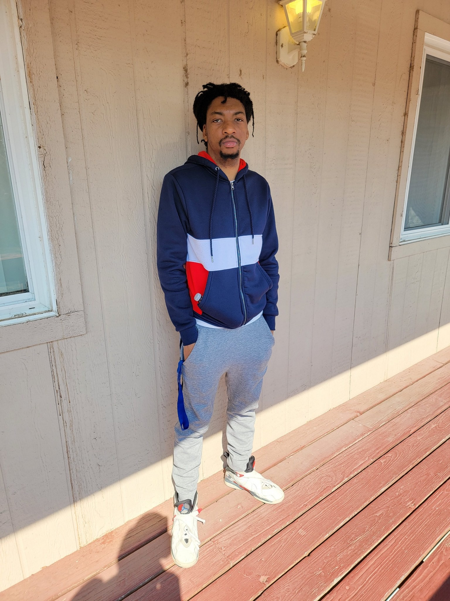

About Me
Right after i graduate Lanchcode. I made my first website which was for my Untie business. It's a healthcare business for the elderly.
I still haven't got a job and Lanchcode didn't help me much. So now I'm continuing my journey and taking matters into my own hands.
I plan to build a business website where i showcase all the websites i have done and just keep growing and get a job to push me even further.
Contact Me
If you have any questions feel free contact me or follow me at: